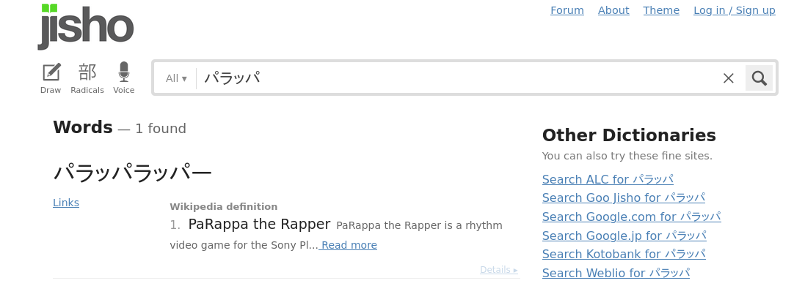
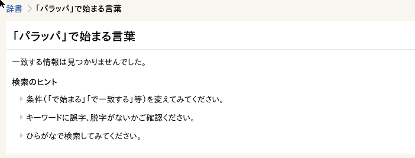
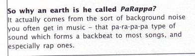

It’s “"popular knowledge" that the PaRappa name originates
from "paper thin" in Japanese.
This bit of trivia is presented as fact in many Parappa-related
pages across the internet, including Wikipedia and the PaRappa
Fando(o)m wiki.
But what if I told you that this "fact" is not just false, but downright baseless? And that Masaya Matsuura himself has explained from where the name “"PaRappa" actually came from?
In the Wikipedia page for PaRappa (the character), it’s mentioned that the name PaRappa originated as a word play on "paper thin" in Japanese. This origin is referenced to have been sourced from a New York Times article from 1998 called "The Japanese Embrace Hip-Hop, and Parappa Is Born”.
This article, written by the American J.C Herz, says the following about the origin of PaRappa’s name:
However, a quick search through Jisho for "Parappa” will only bring up PaRappa The Rapper, as shown in this screenshot:
Other dictionaries, such as Goo, don't give any results.
Meanwhile, the actual word used to describe "flat” in Japanese is taira 『平』.
L:wAnd so, if PaRappa’s name doesn’t come from "paper thin” in Japanese, then where did it come from?
Well, it turns out that Masaya Matsuura, original creator and director of the PaRappa games has actually explained where he got the PaRappa name from.
For the European release of the first PaRappa the Rapper game, Masaya Matsuura was interviewed by the Official UK Playstation Magazine. This interview would then be published on Issue 23 in 1997. When asked about the origin of the name PaRappa, he answered with the following:
In order to confirm this, we'll visit The Jaded Network's Sound Effects Database in order to find if they have any sound effects that sound similar enough to PaRappa. We go on the index, click on 「ハ」
Go back to the Articles section...